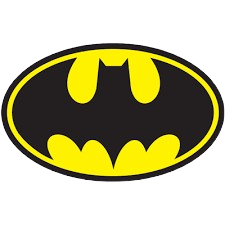

Batman ou "Homem-morcego" é uma personagem fictícia e super-herói da editora norte-americana DC Comics, criado pelo escritor Bill Finger a partir dos esboços do desenhista Bob Kane, aparecendo pela primeira vez na revista Detective Comics #27 (maio de 1939) com o nome "Bat-Man". A identidade secreta do Batman é Bruce Wayne, um bilionário americano, playboy, magnata de negócios, filantropo e dono da corporação Wayne Enterprises. Depois de testemunhar o assassinato dos seus pais enquanto criança, Wayne jurou vingança com um ideal de justiça contra os criminosos. Wayne, então, treina física e intelectualmente e cria uma persona inspirada no morcego para combater o crime.[2] Batman opera na cidade fictícia Gotham, sendo ajudado por seu mordomo Alfred Pennyworth, o comissário de polícia Jim Gordon e diversos aliados vigilantes, sendo Robin seu parceiro mais recorrente. Ao contrário da maioria dos super-heróis, Batman não tem superpoderes; assim, na sua guerra contra o crime, utiliza seu intelecto de gênio, sua perícia em artes marciais e sua destreza física — bem como sua riqueza, que lhe garante um arsenal de última geração. Uma grande variedade de vilões compõe a galeria de inimigos do Batman, incluindo o Coringa, seu nêmesis. Batman tornou-se popular assim que foi apresentado, acabando por ganhar a sua própria história em quadrinhos em 1940. Enquanto as décadas progrediram, foram surgindo divergências sobre a interpretação do personagem. No final dos anos de 1960, a série de televisão Batman usava uma estética camp, que continuou a ser associada ao personagem muitos anos após o fim da série. Vários criadores trabalharam no sentido de devolver o personagem às suas raízes sombrias, culminando com The Dark Knight Returns (1986), de Frank Miller, seguido por Batman: The Killing Joke (1988), de Alan Moore, e Arkham Asylum: A Serious House on Serious Earth (1989), de Grant Morrison. Apesar dessa decisão radical, o sucesso cinematográfico Batman da Warner Bros. ajudou a manter o interesse do público no personagem.
Batman e Robin são personagens da DC Comics que atuam juntos como uma dupla dinâmica na luta contra o crime.
Para mais informações clique no link ao lado
